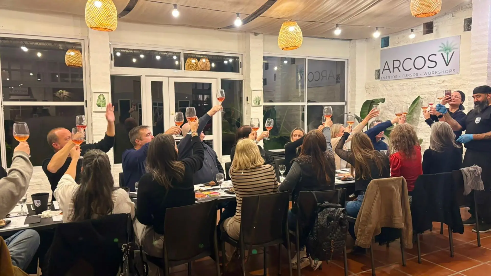

Núñez tiene fama de ser un barrio tranquilo, residencial, sin demasiadas vueltas. Pero como pasa con casi todos los barrios de Buenos Aires, basta rascar un poco la superficie para encontrar historias que pocos conocen. Te dejamos algunas.
El 27 de abril de 1873, un tren especial partió desde la estación 25 de Mayo con cerca de dos mil personas a bordo, todas dispuestas a instalarse en las tierras que un empresario llamado Florencio Emeterio Núñez había donado para fundar un pueblo nuevo. Ese mismo día se inauguró también la estación de tren que llevaría su nombre. Hubo discursos, un brindis y una celebración que —según cuentan las crónicas de la época— se extendió durante unas quince horas. Así nació, el mismo día, tanto Núñez como el barrio vecino de Saavedra.
Antes de ser urbanizada, la zona estaba atravesada por varios arroyos. Muchos de esos cursos de agua siguen existiendo, pero hoy corren entubados bajo el asfalto. El más conocido es el Arroyo Medrano, que todavía fluye bajo la Avenida Comodoro Rivadavia hasta desembocar en el Río de la Plata — y explica, de paso, por qué esa avenida tiene esas curvas tan particulares en lugar de ir en línea recta.
Antes de que existiera Aeroparque, Buenos Aires tuvo su primer aeropuerto en Núñez, en la zona de la vieja Estación Rivadavia, cerca de Pico y Libertador. Hoy no queda ningún rastro visible, pero es un dato que sorprende incluso a varios vecinos del barrio.
Los terrenos donde hoy se levanta el estadio de River Plate no siempre estuvieron ahí: fueron cedidos por el gobierno nacional en 1925, unos 30.000 metros cuadrados ganados al Río de la Plata. El estadio se inauguró unos años después, el 25 de mayo de 1938, con capacidad para 100.000 espectadores.
El estadio de Obras Sanitarias, conocido sobre todo por el básquet, fue durante décadas uno de los escenarios más importantes del rock argentino. Por ahí pasaron leyendas como Charly García, Soda Stereo, Los Abuelos de la Nada y Sumo, entre muchos otros — una historia musical que convive, hasta hoy, con la actividad deportiva del lugar.
Núñez también es sede del CENARD, el Centro Nacional de Alto Rendimiento Deportivo, un predio enorme donde se entrenan atletas argentinos de elite antes de representar al país en competencias internacionales. No es casual que el barrio tenga, además, una fuerte identidad deportiva.
La próxima vez que estés por la zona —antes o después de tu encuentro en Arcos V— quizás valga la pena mirar el barrio con otros ojos. Debajo de cada avenida tranquila hay más historia de la que parece a simple vista.
¿Todavía no tenés fecha para tu próxima visita a Arcos V?
💬 Escribinos por WhatsApp